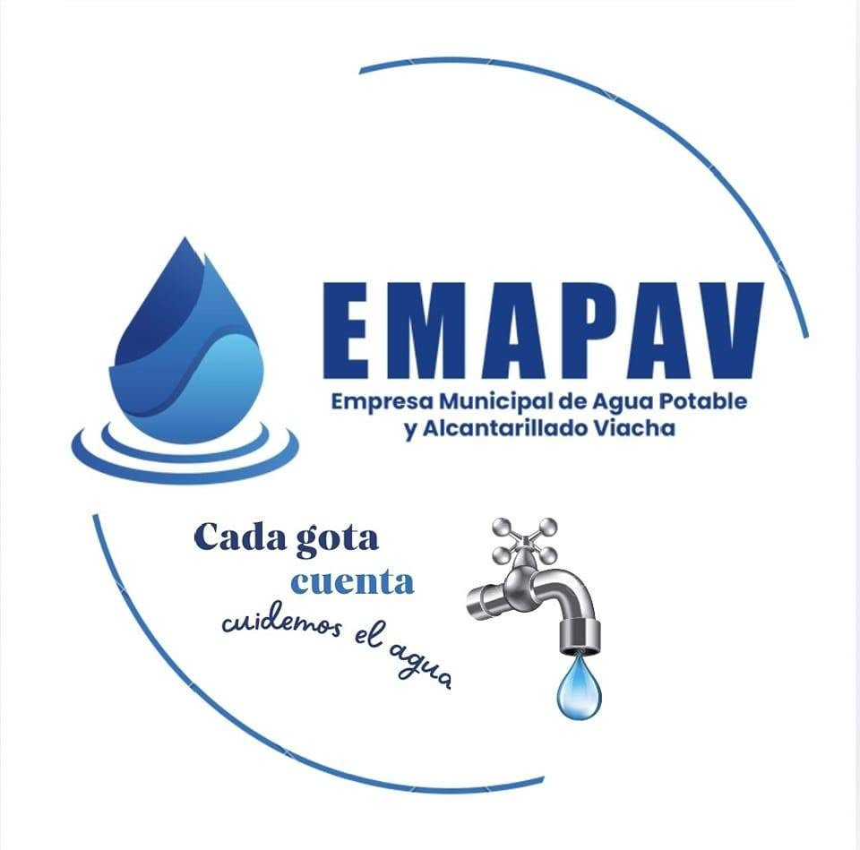

Agua potable
Suministro continuo de agua de calidad para todos los sectores de Viacha.
Somos la empresa municipal que lleva agua segura a cada hogar y cuida el saneamiento de nuestra ciudad, en la provincia Ingavi.

Todo el ciclo del agua, desde la fuente hasta el tratamiento.
Suministro continuo de agua de calidad para todos los sectores de Viacha.
Recolección y tratamiento de aguas residuales.
Trabajos preventivos y correctivos en la red.
Consultas y reclamos por teléfono, WhatsApp o en oficina.
Prestar los servicios de agua potable y alcantarillado sanitario a la población de la ciudad de Viacha, Provincia Ingavi, Departamento de La Paz.
Ser una empresa autónoma con vocación de servicio y capacidad de gestión técnica y administrativa, que trabaja con eficacia, eficiencia, calidad y responsabilidad hacia los usuarios.
Personal directivo responsable de la gestión de la empresa.
Infraestructura para el desarrollo de Viacha.
Devolvemos el agua al entorno con responsabilidad y protegemos la salud de la comunidad.
Seleccione una noticia para verla en la página de Facebook de EMAPAV.
La tarifa depende de la categoría y del consumo medido en m³. Consulte los valores vigentes en cajas o en nuestras publicaciones oficiales.
Viviendas y hogares.
Tiendas, restaurantes y servicios.
Industrias y plantas de producción.
Instituciones públicas y sociales.
Las categorías son referenciales; confirme con EMAPAV la que corresponde a su conexión.
Planifique su consumo con anticipación.
| Fecha | Zona | Motivo |
|---|
Video informativo de la empresa.
Acceda a documentos de gestión, normativa y convocatorias.
Consulte en línea los resultados de laboratorio. Son documentos de solo lectura.
Pequeños hábitos que reducen su factura y cuidan el recurso.
Una llave que gotea pierde decenas de litros al día.
Cierre la llave mientras se enjabona.
En la mañana o al atardecer se evapora menos agua.
Nuestra infraestructura y trabajos en Viacha.
En cajas de EMAPAV, de lunes a viernes de 8:00 a 12:00 y de 14:00 a 17:30, o desde la Banca Móvil del BancoSol.
Revise los requisitos en la Guía de trámites y presente su documentación en nuestras oficinas.
Llame al 2800592 o 2800514, o envíe una solicitud desde el formulario de esta página.
La Autoridad de Fiscalización y Control Social de Agua Potable y Saneamiento Básico (AAPS).
Envía tu consulta o reclamo directamente desde esta página. Déjanos tu correo electrónico para que el equipo de EMAPAV pueda ponerse en contacto contigo.
Llama al 2800592 o 2800514.
Los campos marcados con \* son obligatorios.
Estamos aquí para atenderle.
| Trámite | Descargar |
|---|